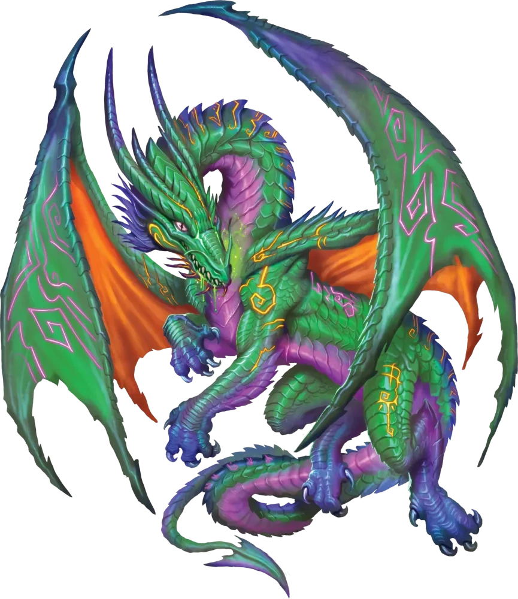

各年龄段数据卡
太古丑角龙是永恒的诡计谐星；它们凭借超凡脱俗的社交洞察推演人心，以诙谐笑话与辛辣嘲弄授人以深刻教训，迫使他人在巨龙道出的迷乱真言面前重新审视自己的整个人生。尽管外表总在装疯卖傻，太古丑角龙的睿智程度实则不亚于凡间最伟大的至高教长；它们一针见血的洞察力足以剥开深藏在我们心底最幽暗的秘密――那些我们不仅战战兢兢地瞒着最亲近之人、甚至连对自己都不敢承认的自欺谎言。 自然，这般行事作风绝不可能让太古丑角龙成为受人欢迎的访客。没几个人愿意被人把壁橱里的陈年丑闻统统抖落出来、将不可告人的家丑摊在阳光底下。但话又说回来，这世上又有几个人有本事凭武力将一条太古丑角龙拒之门外呢？况且归根结底，这条巨龙往往恰恰正是目标（无论是单个生灵还是整个人类社会）拔除深扎心头之积毒所最需要的一剂猛药。 笑到最后丑角龙向来喜爱装傻充愣，哪怕是太古丑角龙也不例外。然而，任何粗心大意到真以为自己成功耍了一条太古丑角龙的家伙，纯粹是在自讨苦吃、等着被抽掉脚下的地毯。为了达成自己的目的，太古丑角龙固然很乐意先让你得意大笑一番；但到了最后，笑到最后的那一个永远只会是它自己。 |
 太古丑角龙 |